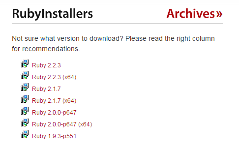
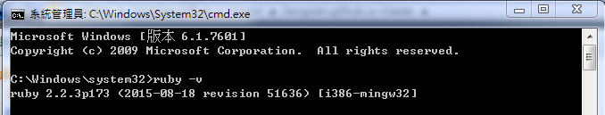
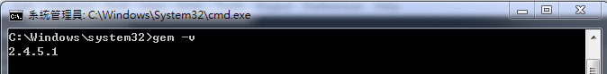
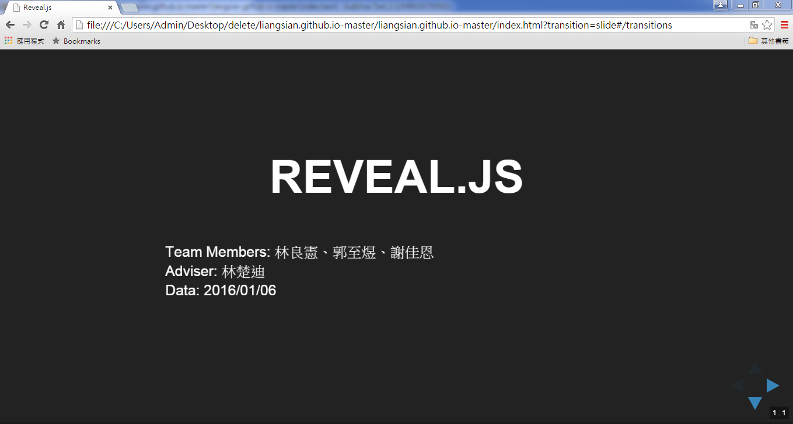
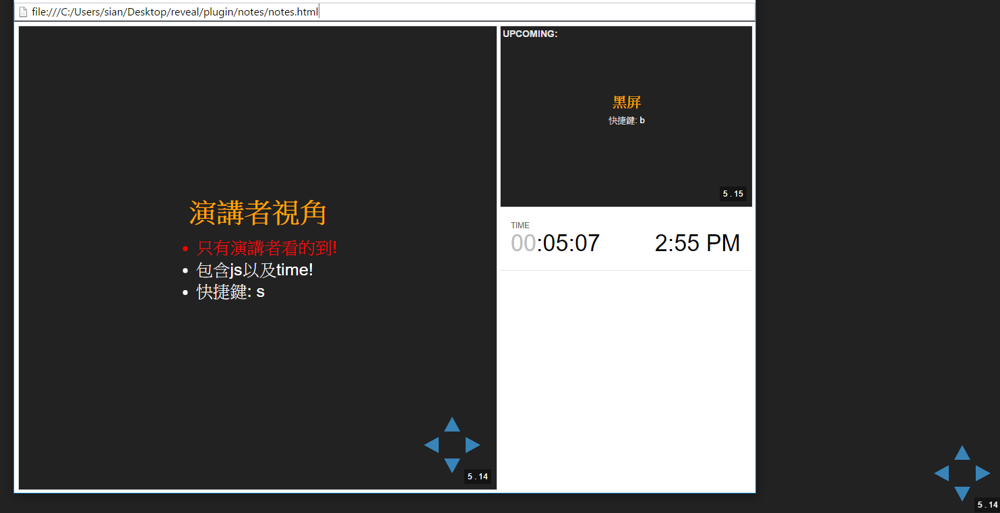

REVEAL.JS
Team Members: 林良憲、郭至煜、謝佳恩
Adviser: 林楚迪
Data: 2016/01/06
introduction
- Html + CSS + reveal.js Relations
- Html
- Haml
- Reveal.js
- Github.io
- Faced Problem
Html + CSS + Reveal.js
Relations
Html
基礎語法
| Syntax | Purpose |
|---|---|
| < h1 >...< /h1 > | 標題 |
| < p >...< /p > | 一行 |
| < span > | 不換行 |
| < ol >...< /ol > | 有數字的list |
| < ul >...< /ul > | 無數字的list |
| < li >...< /li > | list中的選項 |
| < a >...< /a > | list中的選項 |
基礎語法
| Syntax | Purpose |
|---|---|
| < section > | 每一頁面(or章節) |
| < section > < section > | 垂直分頁 |
| < img > | 插入圖片, 後接url |
| < a > | 超連結, 後接url |
進階語法
| Syntax | Purpose |
|---|---|
| < table > | 製作表格 |
| < thead > | 表格內的所有標頭 |
| < th > | 每一個標頭 |
| < tbody > | 表格內所有內容 |
| < tr > | 以橫列顯示表格內容 |
| < td > | 每一格的內容 |
haml
haml
- 以Ruby環境寫出
- 快速編寫html(縮排、%)
Demo code
%h1 進階語法
%table
%thead
%tr
%th Syntax
%th Purpose
%tbody
%tr
%td < section >
%td 每一頁面(or章節)
%tr
%td < table >
%td 製作表格
%tr
%td < thead >
%td 表格內的所有標頭
%tr
%td < th >
%td 每一個標頭
%tr
%td < tbody >
%td 表格內所有內容
%tr
%td < tr >
%td 以橫列顯示表格內容
%tr
%td < td >
%td 每一格的內容<h1>進階語法</h1>
<table>
<thead>
<tr>
<th>Syntax</th>
<th>Purpose</th>
</tr>
</thead>
<tbody>
<tr>
<td>< section ></td>
<td>每一頁面(or章節)</td>
</tr>
<tr>
<td>< table ></td>
<td>製作表格</td>
</tr>
<tr>
<td>< thead ></td>
<td>表格內的所有標頭</td>
</tr>
<tr>
<td>< th ></td>
<td>每一個標頭</td>
</tr>
<tr>
<td>< tbody ></td>
<td>表格內所有內容</td>
</tr>
<tr>
<td>< tr ></td>
<td>以橫列顯示表格內容</td>
</tr>
<tr>
<td>< td ></td>
<td>每一格的內容</td>
</tr>
</tbody>
</table>How to install haml
- 因為haml是以Ruby的環境寫成
- 所以我們得先下載Ruby
- 選擇一個適合自己電腦的ruby檔案 
- 開啟cmd確認ruby是否有安裝成功 
- 再確認是否有gem 
gem是ruby的第三方套件管理程式，類似於Centos環境中的yum、Ubuntu的apt-get、Python的pip
接下來找個自己喜歡的文字編輯器
就可以開始寫haml囉
- 因為網頁都是以html呈現
- 所以我們需要先把haml轉檔成html
- 開啟cmd
- 鍵入 haml index.haml index.html (index為檔案名稱)
- 接下來在你的資料夾裡會有兩種檔案
- index.haml
- index.html
- 雙擊index.html，就可以進入簡報囉>.0 
reveal.js
reveal.js
- It's open source
- 提供比ppt更具架構化的捲動方式
- 講者可以更節省時間的在投影片上顯示出編排的很漂亮的程式片段
- 就是用Html來做網頁式的簡報!
Now, Let's view the effect of reveal.js
Down
垂直向的下一頁

Up
垂直向的上一頁
left / right
翻至左/右行 最近一次 瀏覽的頁面
若未瀏覽過則翻至左/右行 最上頁

Fragment Styles
分 段 出 現
變大
變小
消失
目前可見
字體變紅
字體變藍
Image background
我是小黑蛋
我最喜歡分數打很高
沒有很多問題的爸爸
啾咪><
GIF Backgrounds
以GIF動圖
當作
background-image
顯示
insert video
show code
#include <iostrem>
using namespace std;
int main(){
cout<< "hello world";
}list 型態
- 看看
- 這是個沒有數字的list
- 看看
- 這就有了吧
表格
| number | item | price |
|---|---|---|
| 1 | chocolate | $500 |
| 2 | lamp | $1500 |
| 3 | fan | $100 |
演講者視角
- 只有演講者看的到!
- 包含js以及time!
- 快捷鍵: s

黑屏
快捷鍵: b
view structure
查看整個簡報的架構
快捷鍵: esc
change theme
Black - White - League - Sky - Beige - SimpleSerif - Blood - Night - Moon - Solarized
background transitions
None - Fade - Slide - Convex - Concave - Zoomgithub.io
Github.io
- 提供靜態網頁空間
- XXXXX.github.io
faced problem
Problem
- utf-8編碼問題
- 字元跳脫問題
- 排版不美觀
END
Thank you for listening.